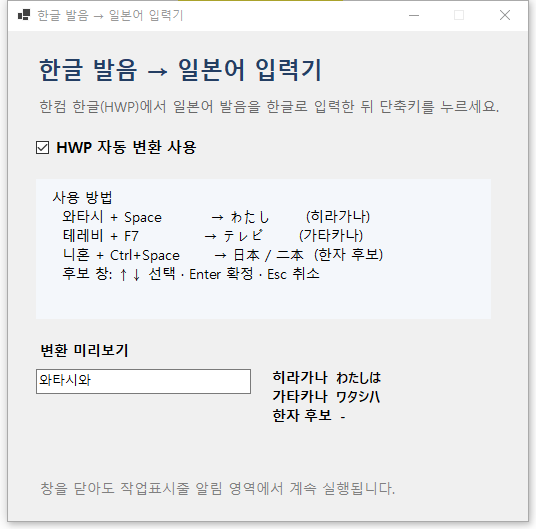

ハングル発音入力
「와타시」「테레비」のように、日本語の読みをハングルでそのまま入力できます。
FREE · OPEN SOURCE · WINDOWS
日本語の発音を韓国語キーボードで入力し、Hancom Hangul（HWP）上でひらがな・カタカナ・漢字にすばやく変換できる無料ツールです。

ひらがな와타시 + Space
カタカナ테레비 + F7
漢字候補니혼 + Ctrl + Space
WHY THIS TOOL
ローマ字入力ではなく、使い慣れたハングルの発音表記から日本語文字を入力したい方のために作られました。
「와타시」「테레비」のように、日本語の読みをハングルでそのまま入力できます。
Spaceでひらがな、F7でカタカナ、Ctrl+Spaceで登録済みの漢字候補を表示します。
入力内容を外部サーバーへ送信しません。アカウント登録も広告表示もありません。
Hancom Hangul（HWP）がアクティブなときだけ変換する、文書作成向けの常駐ツールです。
HWPへ入力する前に、ひらがな・カタカナ・漢字候補をメイン画面で確認できます。
MITライセンスのオープンソース。個人・学校・教会・業務で無償利用できます。
GET STARTED
ZIPを展開し、フォルダー内のHangulJapaneseInput.App.exeを実行します。
Windowsの「言語と地域」で韓国語を追加し、Windows + Spaceで切り替えます。
Hancom Hangulの本文に、変換したい読みをスペースなしの1語で入力します。
目的に合わせてSpace、F7、Ctrl+Spaceのいずれかを押します。
CONVERSION EXAMPLES
※ ひらがな・カタカナは対応する発音表記から変換します。漢字候補は内蔵辞書に登録済みの語に限られます。
FAQ
はい。MITライセンスで公開しており、個人・教育・非営利・商用を問わず利用、複製、変更、再配布できます。ライセンス表示は残してください。
いいえ。変換はパソコン内で行われ、アカウント登録やクラウド送信はありません。
現在のバージョンはHancom Hangul（HWP）専用です。HWP以外のアプリではショートカットを横取りしません。
未登録または非対応の表記では変換されません。まずメイン画面のプレビューで確認してください。日本語IMEのような文脈解析は行いません。
ネットワーク通信やテレメトリーはありません。変換時には直前の語を一時的にWindowsクリップボードへコピーし、通常は処理後に元の内容へ戻します。動作確認用ログは端末内の%LOCALAPPDATA%\HangulJapaneseInput\diagnostic.logに保存されますが、入力した単語そのものは記録しません。
DOWNLOAD
Windows 64-bit · Hancom Hangul（HWP）専用 · MIT License